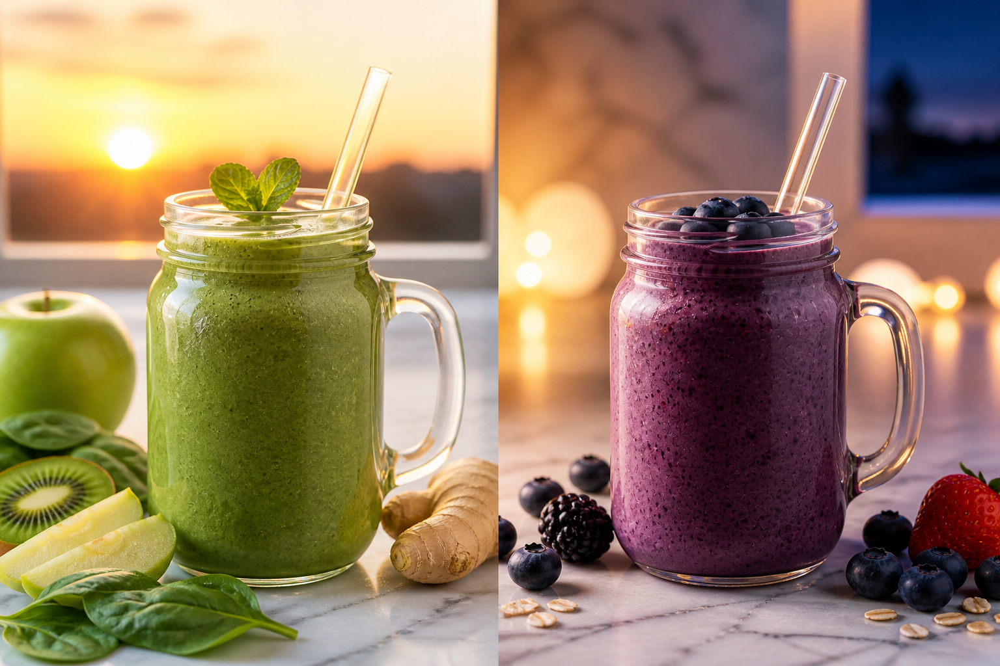
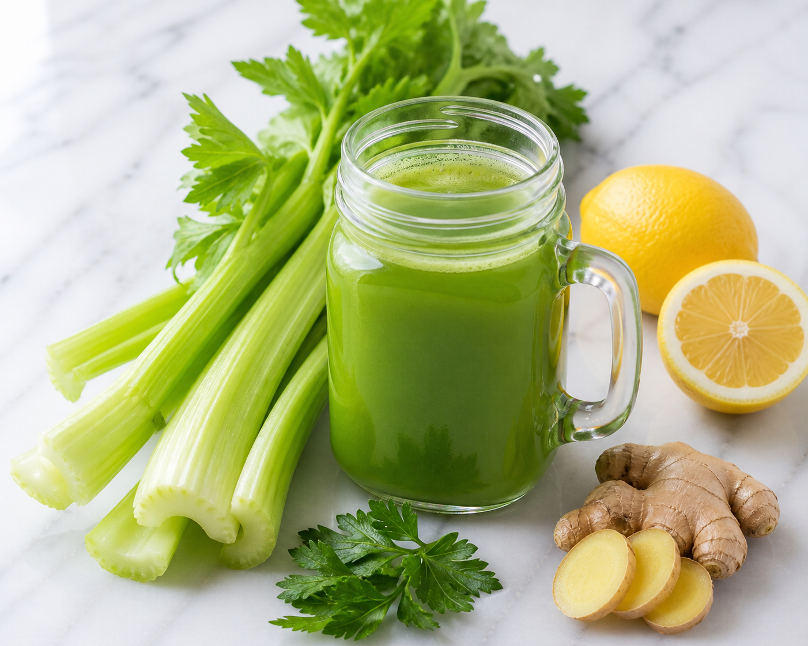
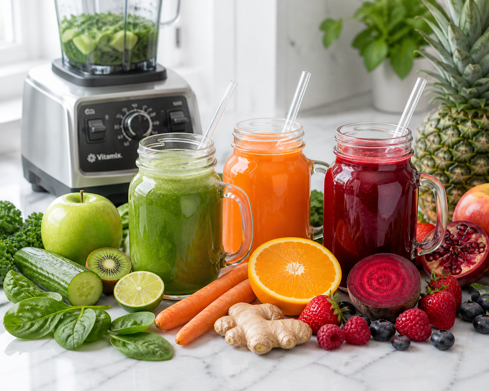
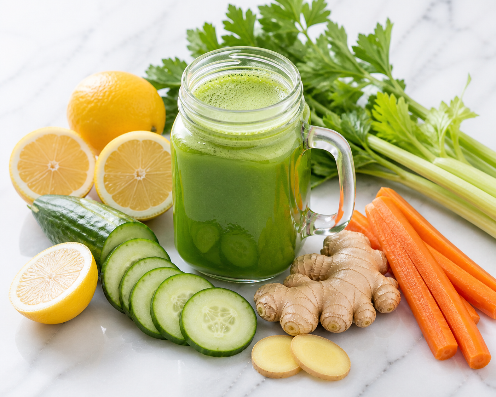
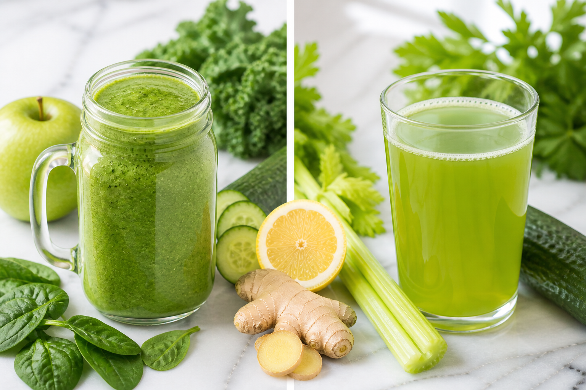
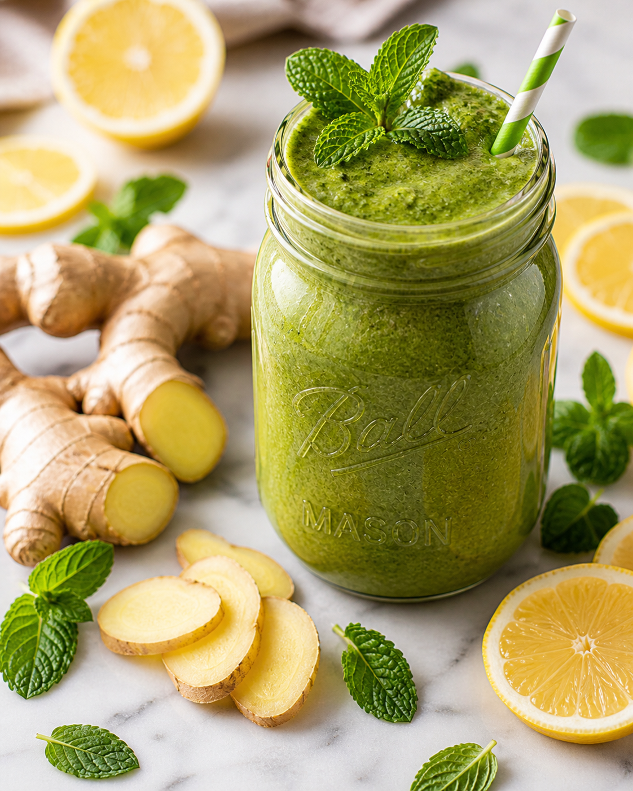
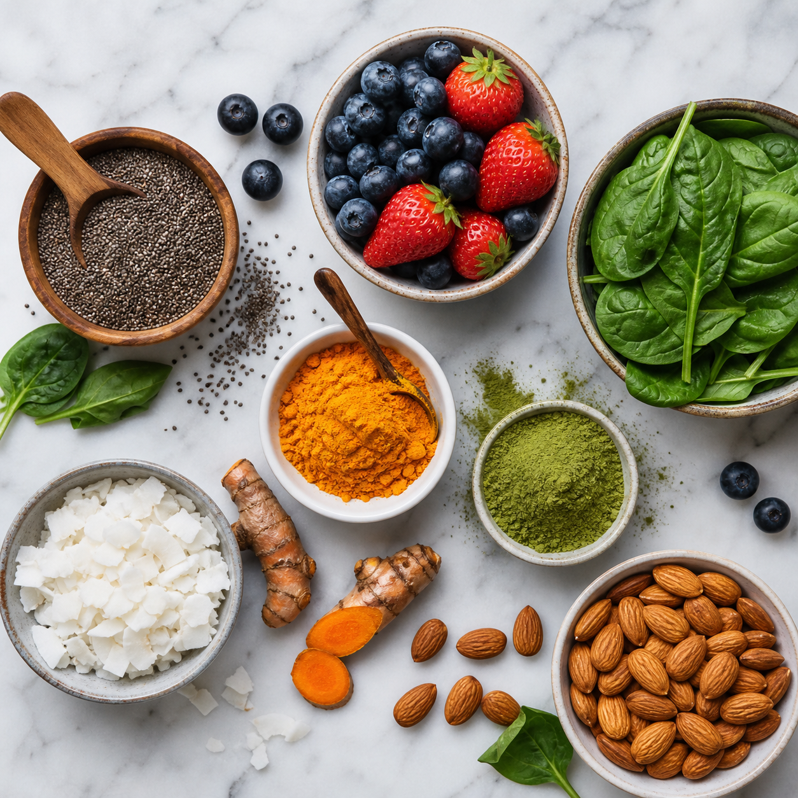
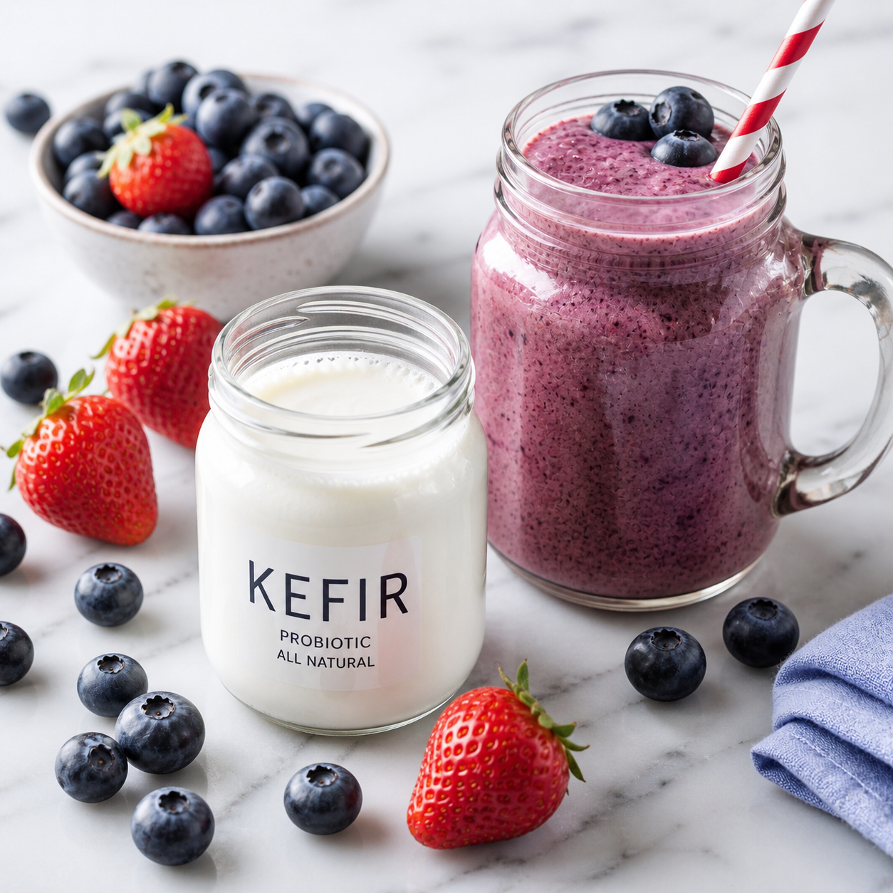

From the Blog
These are the notes, experiments, and kitchen rituals I wish I had when I first started blending every morning.

Green Smoothie Every Day: I Drank One for 30 Days and Here Is What Happened
I started with low energy and one mason jar, then tracked what actually changed after 30 green smoothie mornings.
Read more →Green Smoothie Every Day: I Drank One for 30 Days and Here Is What Happened
I started with low energy and one mason jar, then tracked what actually changed after 30 green smoothie mornings.
Read more →
High Protein Smoothie No Powder: 5 Recipes That Actually Fill You Up
I got tired of chalky powders, so I started building protein rich smoothies with real food that kept me full.
Read more →
Smoothie Meal Prep Sunday: How I Prep 7 Smoothies in 20 Minutes
My Sunday counter turns into a rainbow of mason jars, and those jars rescue my weekday mornings.
Read more →
Fat Burning Smoothie Ingredients I Actually Use In My Kitchen
No magic promises here, just five ingredients I use for metabolism, fullness, and consistency.
Read more →
Best Time To Drink Smoothie: Morning Smoothies vs Evening Smoothies
I used to think a smoothie was a smoothie, then my body taught me that timing changes everything.
Read more →
Celery Juice Benefits: I Tried It for 2 Weeks and This Is My Honest Review
I rolled my eyes at celery juice, tried it anyway, and came away with a more honest opinion.
Read more →
Juice Recipes Without Juicer: 5 Fresh Blender Juices I Love
I left a juicer in my cart for months, then learned the blender method and never looked back.
Read more →
Detox Juice Weight Loss Morning Recipe With Green, Carrot and Ginger
I do not believe in gimmick cleanses, but I do believe in a bright morning juice that supports the body.
Read more →
Smoothies vs Juicing Which Is Better: My Honest Kitchen Verdict
This is the question I get all the time, and my answer is honest: I use both for different reasons.
Read more →
Why Your Morning Smoothie Should Always Include Ginger
I keep fresh ginger near my blender because it makes almost every morning smoothie taste brighter and more alive.
Read more →
10 Superfoods That Transform Any Smoothie Into a Superfuel
These are the smoothie boosters I actually use in my own kitchen, not the dusty powders I forgot in a cabinet.
Read more →
The Truth About Probiotics in Your Daily Blend
Kefir, yogurt, and berry smoothies taught me that gut friendly food can feel creamy and generous.
Read more →